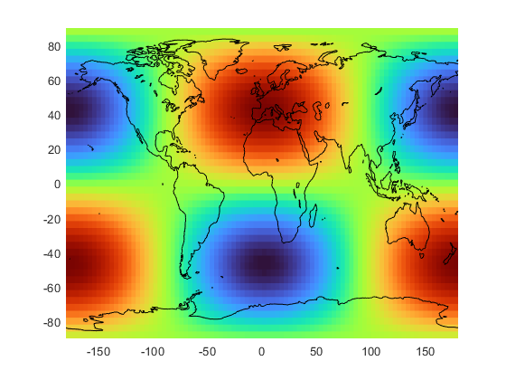
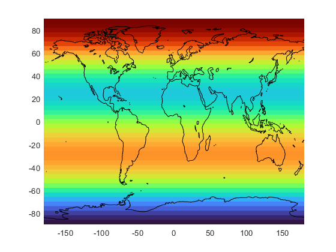
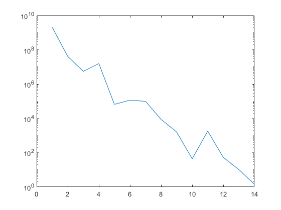
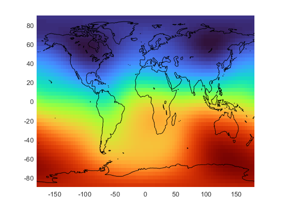
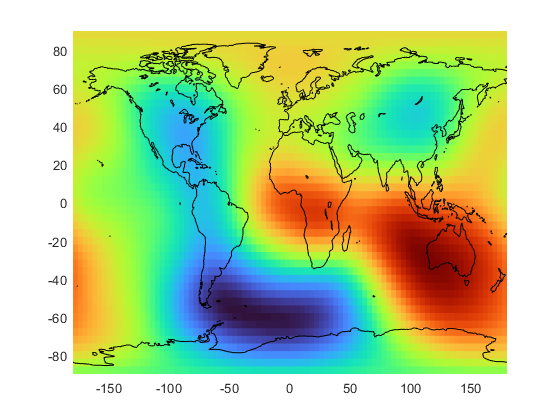
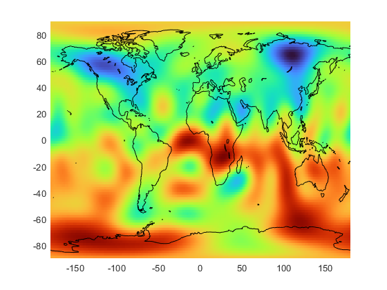

Contents
clear; clc; close all
load('my_coast.mat');
coeff = [ 0 0 0 0;
1 0 0 0;
1 1 0 0;
2 0 0 0;
2 1 6 0
2 2 0 0;
3 0 0 0;
3 1 0 0;
3 2 0 0;
3 3 0 0;];
[z,lons,lats] = plm2xyz(coeff,4,[-180 90 180 -90]);
pcolor (lons,lats,z); shading flat; colormap turbo
hold on
plot(long,lat,'k');
figure
coeff2 = [ 0 0 0 0;
1 0 0 0;
1 1 0 0;
2 0 0 0;
2 1 0 0
2 2 0 0;
3 0 6 0;
3 1 0 0;
3 2 0 0;
3 3 0 0;];
[z,lons,lats] = plm2xyz(coeff2,4,[-180 90 180 -90]);
pcolor (lons,lats,z); shading flat; colormap turbo
hold on
plot(long,lat,'k');
 
figure
load('GUFM1.mat');
[a,~,c] = unique(MAG(:,1));
out3 = [a, accumarray(c,MAG(:,3))];
out4= [a, accumarray(c,MAG(:,4))];
power = out3(:,2).^2 + out4(:,2).^2;
plot(a, power); set(gca, 'yscale' , 'log');
figure
[Z, lons, lats] = plm2xyz(MAG, 4, [-180 90 180 -90]);
pcolor (lons,lats,Z); shading flat; colormap turbo
hold on
plot(long,lat,'k');
figure
MOG = MAG;
MOG(1, 3) = 0;
[Zz, lons, lats] = plm2xyz(MOG, 4, [-180 90 180 -90]);
pcolor (lons,lats,Zz); shading flat; colormap turbo
hold on
plot(long,lat,'k');
  
Core Mantle Boundary
figure
r = 6371;
r2 = 3486;
cmbcoeff = (r/r2).^(MAG(:,1)+1);
MAC = MAG;
MAC(:,3) = MAC(:,3).*cmbcoeff;
MAC(:,4) = MAC(:,4).*cmbcoeff;
[Z, lons, lats] = plm2xyz(MAC, 1.95, [-180 90 180 -90]);
pcolor (lons,lats,Z); shading flat; colormap turbo
hold on
plot(long,lat,'k');
